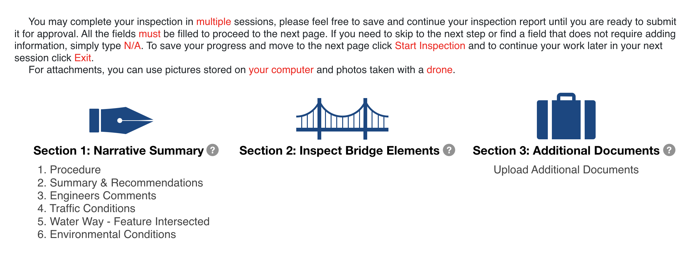

Bridge Inspection Management System
Loged in as Inspector |
sign out
Inspection Management
Instructions
1 Narrative Report
2 Bridge Elements
3 Additional Elements
4 Review & Finish
Vietnam Veterans Memorial Bridge
111-3/5-5.95(01110) | 035A123 | I-470, Wheeling, WV 26003, United States | In-Depth | 2021-11-29

Start Inspection
Get Data from Previous Inspection